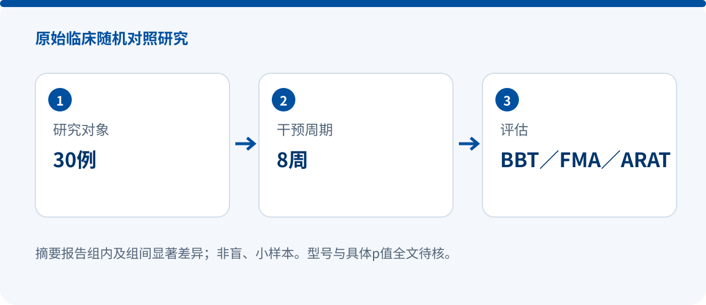

Robotic-glove-assisted task-oriented mirror therapy: a 30-participant, eight-week non-blinded randomized trial
RANDOMIZED CONTROLLED STUDY
Effects of robotic glove-assisted task-oriented mirror therapy on hand motor function in sub-acute stroke patients: Randomised controlled trial
Abdul Rehman, Furqan Ahmed Siddiqi, Saman Shaukat
Hong Kong Physiotherapy Journal
DOI: 10.1142/S1013702526500149 · Original record
SYREBO | 30 participants | BBT / FMA-UE / ARAT

Research design
Conducted at NIRM and Athlean Physical Therapy in Islamabad, this was a non-blinded randomized controlled trial. Group A received robotic-glove-assisted task-oriented mirror therapy, while Group B received task-oriented mirror therapy. Searchable abstract text identifies the robotic hand as SYREBO; the exact model remains unverified.
Both groups first received 30 minutes of conventional therapy followed by 30 minutes of the assigned intervention, once daily, five days per week for eight weeks. Outcomes were the Box and Block Test (BBT), Fugl-Meyer Assessment of the Upper Extremity (FMA-UE), and Action Research Arm Test (ARAT).
Key findings
- The abstract reports improvement within both groups and statistically significant between-group differences.
- The outcomes span gross manual dexterity, upper-limb motor impairment and activity limitation, providing a broader functional view than a single scale.
- Specific p-value expressions were not fully readable in the publisher abstract and are therefore not reconstructed here.
Why it matters
This trial directly examines adding a robotic glove to task-oriented mirror therapy, a clinically relevant treatment-pathway question. An accurate summary is that a 30-participant, eight-week RCT reported positive findings, alongside its non-blinded design, small sample and full-text limitations.
Evidence boundaries
- The non-blinded design may increase performance and detection-bias risk.
- With only 30 participants, confirmation in larger multicenter studies is needed.
- Full text pending: exact model, effect sizes, adverse events and follow-up details remain unverified.
Source and verification
Device names, sample accounting and numerical results follow the verified source scope stated above. No missing values are inferred.